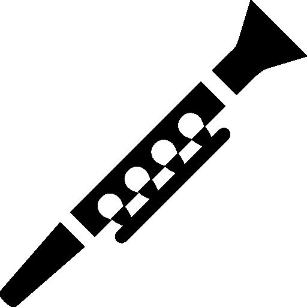
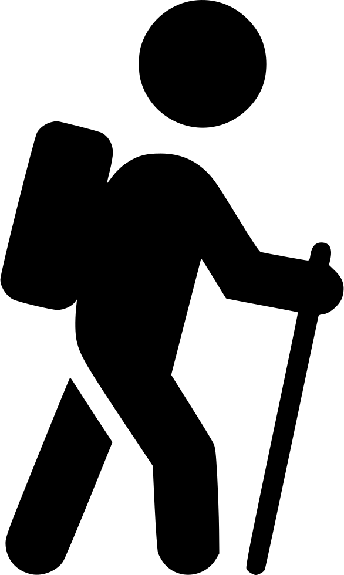
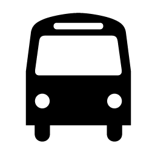
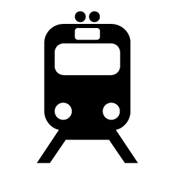

Milano
 Numeri di Emergenza
Numeri di Emergenza
| Ambulanza |
118 |
| Vigili del Fuoco |
115 |
| Polizia |
113 |
| Carabinieri |
112 |
Cose da Fare
Tennis da Tavolo
Banda
 Escursioni
Mezzi di Trasporto
a Milano
in Italia
Informazione su Milano
 Informazione Generale
Informazione Generale
Governo
Compere
Negozi di Alimentari
Computer ed Elettronica
Shopping Locale
Shopping Online
Intrattenimento e Notizie Online
 Notizie
Notizie
 Intrattenimento
Intrattenimento
 Musica
Musica
Interesse Generale
Esplorazione Spaziale e Scienze Spaziali
Italian Language & News
Risorse per gli Espatriati
American Expats
 U.S. Embassy & Consulates
U.S. Embassy & Consulates
EU Information
Cittadinanza Italiana
Tennis da Tavolo
Dove giocare
Organizzazioni e società
Forum
Band
Bande e orchestre
Organizzazioni
Escursioni
Mezzi di trasporto a Milano
Mezzi di trasporto in Italia
Informazione Generale
Governo
Negozi di Alimentari
Computer ed Elettronica
- Yelp: Top 10 Electronics Stores in Milan
- Apple Store
Piazza del Liberty, 1
Milano, 20121
02 3030 2400<
lun - dom: 10:00 - 21:00
- Media Markt
Viale Umbria, ang. via colletta 48/B, Milano
02-54080.111
Lunedí - Venerdí: 09.00 - 21.00
Sabato: 08.30 - 21.00
Domenica: 09.00 - 20.00
- Media Markt (freestand)
Viale Carlo Troya, 18, Milano
02-42208.111
Lunedí - Venerdí: 09.30 - 21.00
Sabato: 09.00 - 21.00
Domenica: 10.30 - 19.30
- Media Markt (freestand)
Via Rubattino ang. via Pitteri, 84, Milano
02-21048.111
Lunedí - Venerdí: 09.30 - 21.00
Sabato: 09.00 - 21.00
Domenica: 10.30 - 19.30
- Media Markt (freestand)
Via Lorenteggio, 230, Milano
02-48396.111
Lunedí - Sabato: 10.30 - 20.00
Domenica: chiuso
Shopping Locale
Shopping Online
Notizie
Notizie in streaming
Siti web
Intrattenimento
Televisione e video in streaming
Musica
Internet radio & video
Interesse generale
Streaming radio & podcasts
Siti web
Esplorazione Spaziale e Scienze Spaziali
Televisione e video in streaming
Siti web
Italian Language & News
Streaming TV & Video in Italian
Local Files for Studying Italian
Italian Language Learning Websites
Italian Language Courses in Milan
Expat Resources
Websites
U.S. Embassy & Consulates
Contact Information
EU Information
Websites
Cittadinanza Italiana
Websites